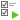

创建批处理作业（步骤一）
添加工作到批处理作业
在“常规”选项卡的底部窗格中，选择工作类型，然后如有需要浏览连接、数据库和/或模式以找出你想运行的工作。
你可以点击 或 来将已选择的工作或所有工作从“可用的工作”列表移动到“已选择的工作”列表。若要从已选择的工作列表删除已选择工作或所有工作，请点击 或 。你可以在一个批处理作业中运行来自不同服务器的配置文件。
若要重新排序工作的序列，可在已选择的工作列表中拖拉工作到所需的位置。
如果你想备份整个服务器，你可以选择连接并选择“Backup Server xxx”。
导出的文件可以添加到批处理作业作为邮件附件。在已选择的工作列表选择工作并点击 或 以添加或移除邮件附件。
设置电子邮件通知
Navicat 让你生成并发送具有计划返回的结果的个人电子邮件。结果可以发送到多个收件者。在“高级”选项卡中勾选“发送邮件”选项并输入所需的信息。
发件人
指定发件人的电子邮箱。例如：someone@navicat.com。
收件人, 副本
指定每一个收件人的电子邮箱，以逗号或分号 (;) 分隔。
主旨
以自定义格式指定电子邮件的主旨。
主体
填写电子邮件的内容。
主机 (SMTP 服务器)
为出去的信息输入简单邮件传输协定（SMTP）服务器。
端口
输入连接出去的电子邮件（SMTP）服务器的端口号。
使用验证
如果你的 SMTP 服务器需要验证以发送电子邮件，可勾选这个选项，并输入“用户名”和“密码”。
安全连接
指定连接使用“TLS”、“SSL”安全连接或“永不”。
发送测试邮件
Navicat 将会发送一个测试邮件给你显示是成功或失败。
保存或运行批处理作业
在设置计划前，点击  按钮来保存批处理作业。
按钮来保存批处理作业。
你可以点击  按钮来手动运行批处理作业。“信息日志”显示运行进度、运行时间和成功或失败信息。